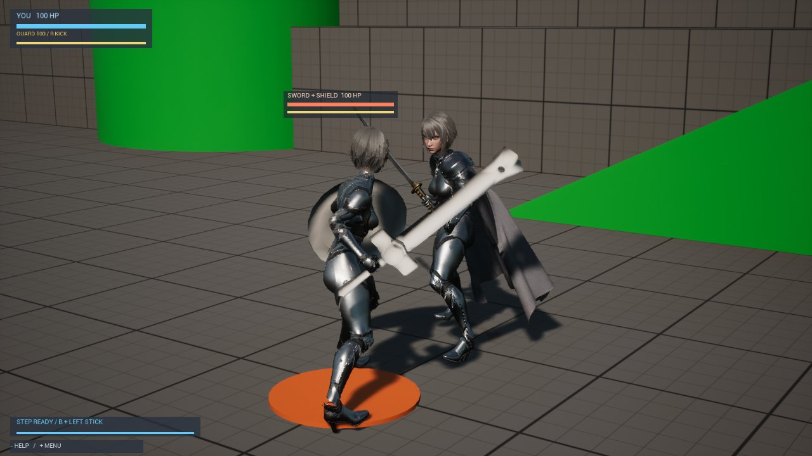

角色与操作
整理角色素材、装配和材质，接入动作与操作控制，让角色能在场景里移动和战斗。
我用 Unreal Engine 把角色、动作、战斗玩法和三处场景做进同一个 Demo。先看一段浅滩实机画面。
整理角色素材、装配和材质，接入动作与操作控制，让角色能在场景里移动和战斗。
完成攻击、防守、闪避和拳腿玩法，调整出手与命中的节奏，让镜像、长柄和剑盾有不同的应对方式。
搭建沙漠、月夜屋顶和浅滩，结合角色与镜头调整空间，让交锋看得清、打得起来。

点击播放，观察举盾、出手和收势。
剑盾防守与反击 · 8 秒机制演示。测试场景中按固定条件触发格挡，展示一次反击的动作衔接。
我给剑盾对手设计了明确的防守规则：挡住轻击后有机会反击，面对重劈则会消耗防守。玩家可以继续压盾，也可以闪身或绕侧找空档。
我调整了防守规则、反击时机和动作衔接，并把镜像、长柄、剑盾放进同一场景比较。上面展示的是机制测试；完整对战的手感需要结合实际试玩判断。
这是我独立开发的个人游戏 Demo，目前暂未开放下载。制作中使用了 AI 工具及第三方角色、动作素材；这里展示我的制作、整合和玩法开发工作。